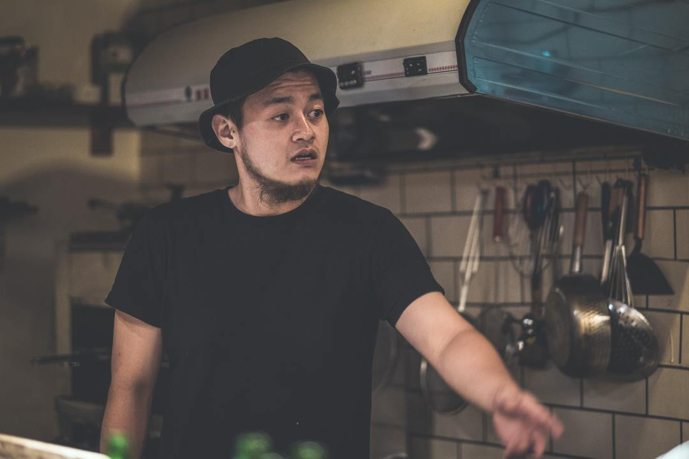
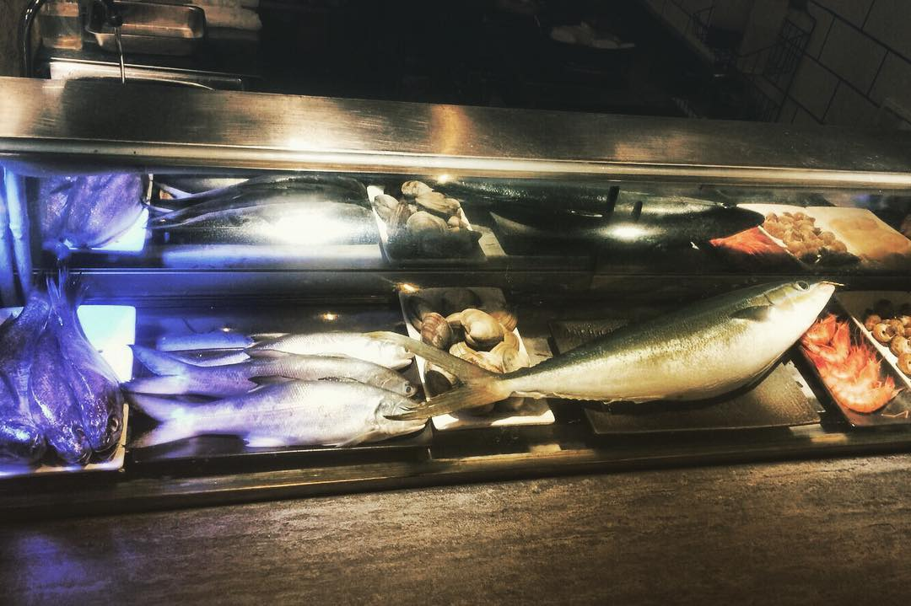
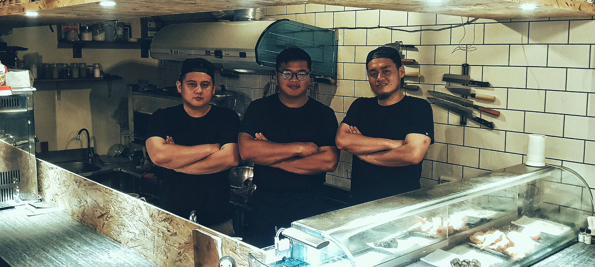

<!doctype html>
<html lang="en">

<head>
    <title>About
    </title>
    <!-- Required meta tags -->
    <meta charset="utf-8">
    <meta name="viewport" content="width=device-width, initial-scale=1, shrink-to-fit=no">

    <!-- Bootstrap CSS -->
    <link rel="stylesheet" href="https://stackpath.bootstrapcdn.com/bootstrap/4.1.3/css/bootstrap.min.css" integrity="sha384-MCw98/SFnGE8fJT3GXwEOngsV7Zt27NXFoaoApmYm81iuXoPkFOJwJ8ERdknLPMO"
        crossorigin="anonymous">
    <link rel="stylesheet" href="https://cdnjs.cloudflare.com/ajax/libs/animate.css/3.7.0/animate.min.css">
    <link rel="stylesheet" href="https://use.fontawesome.com/releases/v5.5.0/css/all.css" integrity="sha384-B4dIYHKNBt8Bc12p+WXckhzcICo0wtJAoU8YZTY5qE0Id1GSseTk6S+L3BlXeVIU"
        crossorigin="anonymous">
    <link href="https://fonts.googleapis.com/css?family=Noto+Sans+TC|Quicksand" rel="stylesheet">
    <link rel="stylesheet" href="https://cdnjs.cloudflare.com/ajax/libs/animate.css/3.7.0/animate.min.css">
    <style>
        body {
            font-family: 'Quicksand', sans-serif;
            background: #000;
        }

        .relative {
            position: relative;
        }

        .absolute {
            position: absolute;
        }

        .transition {
            transition: 0.5s;
        }

        /* ----------title----------- */
        .title {
            max-width: 100%;
        }

        .title>nav>ul {
            list-style: none;
            display: flex;
            justify-content: flex-end;

        }

        .title>nav>ul>li {
            margin: 20px;
            font-size: 20px;
        }

        .menubar {
            margin-right: 30px;
        }

        .menubar a {
            display: block;
            text-decoration: none;
            color: #fff;
            letter-spacing: 5px;
        }
        .fa-bars{
            color: rgb(245, 229,7);
            font-size: 30px;

        }
        .bar{
            max-height: 0;
        }
        .bar ul{
            padding: 0;
            margin: 0;
            transition: 0.5s;
            list-style: none;
            top: 30px;
            right: 0px;
            opacity: 0;
            z-index: 100;
        }
        
        .bar ul li{
            padding: 10px 20px;
            text-align: center;
            color: #000;
            border: 1px solid #fff;
            background: rgb(245, 229,7);
            margin: 3px 0;
        }
        .bar ul li a{
            color: #000;
        }
        .fa-times-circle{
            font-size: 30px;
        }
        .bar li:hover{
            display: block;
            transform: scale(1.1,1.1);
        }
        .bar01{
            display: none;
        }
        /* ----------main----------- */
        .main {
            max-width: 960px;
            margin: 0 auto;
            font-family: 'Noto Sans TC', sans-serif;
        }

        .maintitle {
            max-width: 50%;
            margin: 0 auto;
            text-align: center;
            color: rgb(245, 229, 7);
            cursor: default;


        }

        .mainimg {
            margin: 0 auto;
            max-width: 75%;
            border-radius: 10px;
            overflow: hidden;
        }

        .mainimg img {
            width: 100%;
            border-radius: 10px;
            object-fit: cover;
        }

        .mainin {
            max-width: 80%;
            color: #fff;
            text-align: left;
            margin: 50px auto;
            display: flex;
            border: 1px solid #fff;
            padding:40px;
            border-radius: 10px;
            align-items: center;
            transition: 0.5s;
        }
        .mainin h5{
             max-width: 50%;
             margin: 20px;
             line-height: 40px;
             font-size: 20px;
        }
        span{
            font-size: 30px;
        }
        .footerbig {
            top: 30px;
            max-width: 100%;
            height: 100px;
            margin: 0 auto;
        }

        .footer {
            bottom: 20px;
            margin-top: 50px;
            width: 100%;
            height: 100px;
            background: url(images/wave.svg) 0 0 repeat;
            position: fixed;

        }

        .footer1 {
            bottom: 0;
            left: 4%;
            margin-top: 30px;
            width: 100%;
            height: 100px;
            background: url(images/wave.svg) 0 0 repeat;
            position: fixed;
        }
        .mainin:hover{
            transform:scale(1.1,1.1);
        }
        .goTop {
            background: rgb(245, 229, 7);
            position: fixed;
            right: 80px;
            bottom: 150px;
        }
        .goTop:hover{
            transform: scale(1.5,1.5);
        }


        @media screen and (max-width:768px) {

            .about,
            .menu,
            .contact {
                display: none;
            }

            .fa-bars {
                font-size: 30px;
            }

            .menubar {
                margin: 0;
            }
            .mainin{
                flex-direction: column;
                padding: 10px;
            }
            .mainin h5{
             max-width: 75%;
             margin: 20px;
             line-height: 30px;
             font-size: 18px;
        }
        .footerbig{
            top:10px;
        }
        .footer{
            bottom: 13px;
            width: 100%;
            height: 70px;
        }
        .footer1{
            width: 100%;
            height: 70px;
            left:7%;
        }
        .bar.active ul{
            opacity: 1;
        
        }
        .bar01, .backed{
            display: block;
            cursor: pointer; 
        }
        .goTop {
                display: none;
        }
        }
    </style>
</head>

<body>
    <a class="btn goTop"><i class="fas fa-arrow-up"></i></a>
    <div class="title">
        <nav class="menubar">
            <ul>
                <li class="animated about" data-ani="flash"><a href="home.html">HOME</a></li>
                <li class="animated about" data-ani="flash"><a href="about.html">ABOUT</a></li>
                <li class="animated menu" data-ani="flash"><a href="menu.html">MENU</a></li>
                <li class="animated contact" data-ani="flash"><a href="conant.html">CONTACT</a></li>
                <li class="bar01"><i class="fas fa-bars"></i></li>
                <li class="bar relative">
                    <ul class="absolute">
                            <li class="backed" ><i class="fas fa-times"></i></li>
                            <li><a href="home.html">HOME</a></li>
                            <li><a href="about.html">ABOUT</a></li>
                            <li><a href="menu.html">MENU</a></li>
                            <li><a href="conant.html">CONTACT</a></li>
                        </ul>

            </li>
            </ul>
        </nav>
    </div>
    <div class="main">
        <div class="maintitle">
            <h2>關於跨力酒食</h2>
        </div>

        <div class="mainin animated" data-ani="pulse">
            <h5>看你（台語)，一則是來自於自己隨興的個性以前出門吃飯都是「跨力啊」! 另一層意思則像是坐在居酒屋吧台前 「跨力」看你要吃些甚麼，老闆盡力為你準備美味的菜餚!</h5>
            <div class="mainimg">
                
            </div>
        </div>

        <div class="mainin animated" data-ani="pulse">
            <div class="mainimg">
                
            </div>
            <h5>在台北從事影像工作7-8年的時間後，想回家鄉陪家人，因此在台北的壽司店學習一陣子後，最終回到自己的家鄉礁溪開業。</h5>
        </div>

        <div class="mainin animated" data-ani="pulse">
                <h5>魚貨都親自去採買，除了就近使用來自宜蘭大溪或南方澳的漁產外，同時也會到台灣最大的魚產市場台北的中央市場採買，那裏的魚貨種類多元，挑選食材的種類更多元。</h5>
                <div class="mainimg">
                    
                </div>
            </div>

            <div class="mainin animated" data-ani="pulse">
                    <div class="mainimg">
                        
                    </div>
                    <h5><span style="color:rgb(245, 229, 7)">跨力酒食</span><br>就是屬於你的<br>『深夜食堂』</h5>
                </div>
        

    </div>
    <div class="footerbig relative">
            <div class="footer animated infinite pulse slower absolute">
            </div>
            <div class="footer1 animated infinite pulse slower  delay-1s absolute">
            </div>
        </div>
    <!-- Optional JavaScript -->
    <!-- jQuery first, then Popper.js, then Bootstrap JS -->
    <script src="https://code.jquery.com/jquery-3.3.1.min.js" integrity="sha256-FgpCb/KJQlLNfOu91ta32o/NMZxltwRo8QtmkMRdAu8="
        crossorigin="anonymous"></script>
    <script src="https://cdnjs.cloudflare.com/ajax/libs/popper.js/1.14.3/umd/popper.min.js" integrity="sha384-ZMP7rVo3mIykV+2+9J3UJ46jBk0WLaUAdn689aCwoqbBJiSnjAK/l8WvCWPIPm49"
        crossorigin="anonymous"></script>
    <script src="https://stackpath.bootstrapcdn.com/bootstrap/4.1.3/js/bootstrap.min.js" integrity="sha384-ChfqqxuZUCnJSK3+MXmPNIyE6ZbWh2IMqE241rYiqJxyMiZ6OW/JmZQ5stwEULTy"
        crossorigin="anonymous"></script>
    <script src="js/animate.js"></script>
    <script>
        $(".menubar li").mouseenter(function () {
            var animate = $(this).attr("data-ani")
            $(this).animateCss(animate);
        })
        // $(".mainin").mouseenter(function () {
        //     var animate = $(this).attr("data-ani")
        //     $(this).animateCss(animate);
        // })
        $(".bar01").click(function(){
            $(".bar").addClass("active");
        });
        $(".backed").click(function(){
            $(".bar").removeClass("active");
        });

       $(".goTop").click(function () {
            //$(window).scrollTop(0);
            $('html,body').animate({
                scrollTop: 0
            }, 700);
        });
    </script>
</body>

</html>